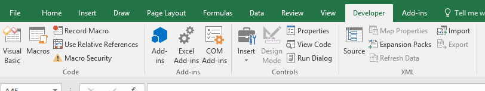
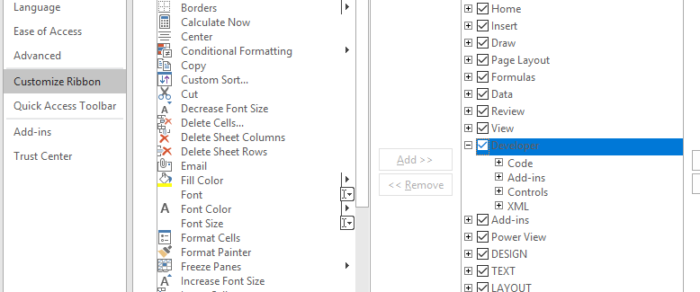

Objectives
Build a dashboard using interactive options, charts, sliders and conditional formatting
Form Controls
Open the following file for use in this lab.
Form Controls and Group Boxes will be used to create interactive dashboard components in Excel. Specifically, you will learn to use form controls to alternate between different pivot table measures, which will in turn update the table and the associated pivot chart.
At the end of this lab, you should have a good understanding of how form controls, such as option buttons, can be integrated with pivot charts in order to create interactive graphics.
Let's start by taking a look at our data. A pivot table has been provided as part of this exercise. The pivot table summarises the ticket price, total fare and departure delay information on a monthly basis. Directly above the pivot table, there is an empty table that we're going to populate using the pivot table, Excel formulas and form controls.
First, you're going to add a group box to the worksheet. A group box is a type of form control that can be used to group related controls, such as buttons or check boxes, into one visual unit. A group box also keeps important reference information consistent. In this step, we are going to be using multiple option buttons, which return an index value depending on the option that is selected. The index increases with each new button. Group box helps us keep the index values of the option buttons from overlapping.
Having a form control such as a group box is done using the Developer tab.

This tab is not activated by default in Excel. Navigate to the File tab and then select Options. This brings up a pop-up window with a number of different Excel settings and options. Click on Customize Ribbon. On the right side of this window, there is a list called Main Tabs, which can be used to customize your Excel ribbon. Check the box in front of Developer and then click OK to confirm the changes.

The DEVELOPER tab provides a variety of features. Select the Insert button that can be found in the Control section. When you click on this button, notice how you are given several different options, including a combo box, check box or even a scroll bar. We want to insert a group box, so select that option from the menu. Notice how the cursor has changed shape once we move it back into the spreadsheet. This is how Excel is letting us know that we can create the group box by clicking anywhere in the sheet and dragging until we get the size we are looking for.
Click and drag to cover cells B3:D8. The box doesn't have to be any exact size but you want to make sure you have enough room for the option buttons that we'll be creating next. Notice how the group boxes are being generically named by Excel. Let's change the caption to something more meaningful. Change the name to "Select measure to display". We can edit the text on the title by putting the cursor over the current title, right-clicking and selecting Edit Text from the menu.
Now you need to add the option buttons to the group box. There are three measures to choose from, ticket price, Total Fare and Depart Delay. Option buttons are also form controls, so use the Developer tab again to insert them. Click on the Insert button in the control section of the tab, which gives us a drop down menu with the various options. Select option button in the menu and using the cursor, click and drag inside of the group box to create the option button.
Create two more option buttons. You want to make sure you keep in mind the key principles of design, so let's align the buttons you just created. Select the three buttons by holding the CTRL key and clicking on each of the buttons. Notice that a DRAWING TOOLS tab now appears in the ribbon. Navigate to the arrange section of the tab and select Align. First, use the Align Left feature, which aligns the boxes to the left. And then use the Distribute Vertically feature to balance the buttons within the group box. Now rename each button using the headers of the table and making sure you maintain the order of the buttons to remain consistent.
Starting with the first option button, press the CTRL key and click on the button in order to select it. This is something that is particular about option buttons. You can't select the object itself by simply clicking on it since that's how you select the option. Now double-click on the text to enable editing replace the current text with Ticket Price. Since this is the header of the first column in the pivot table. Do the same for the other two buttons.
The value of the option button that is selected will be stored in cell C12. So now we need to link the buttons that we just created with the cell. We do this by right-clicking on the first option button and selecting Format Control from the drop down menu. As you can see this gives us a pop up window with various options to format and edit the option button. We want to link it to cell C12 which can be done by navigating to the Control tab at the very right side of the window.
Click in the cell link box and then go to the worksheet and select cell C12. And then click OK to validate your choice. Note that if we select the second button, the number in cell C12 becomes a 2. This is the magic of a group box. Since all three option buttons are part of the same group box, you only need to link one of them to cell C12 and the two remaining buttons are linked to the same cell automatically. You can see that by toggling between the three option buttons, the number in cell C12 changes from 1 to 2 to 3. If you were to add a fourth button in the group box, that would also be linked to cell C12 automatically and it would have the number four.
Note that if you create another group box with the option buttons in it, the numbering would start again at one since Excel considers it to be a separate instance. You've successfully linked the option buttons to cell C12, this cell now shows you which option has been select by the user.
Now you need to be able to change the data you are showing in the dashboard. First you want to complete the empty data table that is located right above the pivot table. The header in cell C15 uses the INDEX formula to get a value from a table by providing the column and row numbers of the cell you are looking for. In this case the heading depends on the option button that is chosen.

Now we need to fill up the rest of the table using the index and match functions (investigate the details of these functions)
=index($C$32:$E$43,match(B16,$B$32:$B$43,0),$C$12)=INDEX(array,rownumber,column)
The array will be the range of data in the pivot table we want to return information from, which is cell C32 to cell E43. Select this range and use the F4 key to anchor the selection.
The next argument is the row number. We will determine this by matching the month and the column to the left of our index formula with the pivot table. Type MATCH and open parenthesis.
MATCH(cell,array,type)
The first argument in this subformula is the cell holding the value that we want to look for. This is in cell B16. The next argument is the array we want to look in. This will be the list of months in our pivot table, cells B32 to B43. Anchor the selection using F4. The final argument is the type of match. In this case, we want an exact match, so use zero.
After closing this argument, we need to provide the final argument of our index formula which identifies the column we want to use in our pivot table. We can point to the form control selection cell C42 above. Lock the cell using F4.
You can now copy this formula down to complete the remaining months. And it will dynamically change based on the radio button selection above. You have created a dynamic table where the values change based on the option that we select.
Dynamic Chart
Now we're going to use this table to create a dynamic chart that will give a visual image of the data allowing a user to spot trends more easily.
Start by selecting the data in cell B15 through cell C27. Go to the insert tab on the ribbon and select the Recommended Charts option that is located in the charts section of the tab. Since the data is a time series, choose the line graph.
The graph that shows the data and can be dynamically changed by selecting a different option.
We have created all the key elements of a basic dashboard. However, you should always remember to keep in mind the principles of design. For example, you should make sure to format the graph before finalizing the dashboard. It is possible to selectively add or remove chart elements by clicking on the chart and finding the plus button in the upper-right corner.
Use this functionality to remove the grid lines since this will make the chart easier to read. Remove the borders of the graph. Make the font color of the axis and title a lighter shade.
Slicers
In this lab you will use slicers and PowerPivot to create interactive dashboard components.
Beginning in cell B38, there are three pivot tables. Number of flights, average delay and average ticket price. You will use these to build charts. We need to create a pivot chart for each of the three pivot tables.
Start with the flight volume over time pivot table. First, click on any cell within the table and then navigate to the PIVOTTABLE tools tab. Since data in the pivot table we selected is a time series, we're going to create a line graph. Click on the Pivot Chart button. Select the Line option and click OK to create the chart.
Change the title to reflect the name of the data it is representing "Flight volume over time". Move the graph so it isn't covering up any other chart elements. Next format the chart that you just created. Begin by removing the field buttons that are currently showing on the chart, such as count of flights or month.
This is done by navigating to the Analyze tab under Pivot Table on the ribbon and toggling the buttons options located near the right of the screen. It is possible to selectively add or remove chart elements by clicking on the chart and finding the plus button in the upper-right corner.
Remove the gridlines since this will make the chart easier to read. Also remove the Legend and the borders of the graph. Change the font colour as before to a lighter shade.
Now create two more charts for the average delay and average ticket price pivot tables.
Next we want to create a slicer, start by clicking on any cell in one of the pivot tables, navigate to the PIVOTTABLE tools tab and click on the Insert Slicer option that can be found in the filter section.
Next, select the Route from the Flights table. From the Insert Slicers window, click on the Route check box within the Flights table. To minimize the number of elements on the dashboard we use a single slicer with the ability to filter each of the pivot charts.
To accomplish this, we need to connect the slicer to each of the pivot charts that were previously created. In order to do this, we're going to start by right-clicking on the slicer and then selecting the Report Connections option. Notice that of the three pivot tables, the pivot table we used to create the slicer is already selected.
Make sure that they have all been checked in order to ensure the slicer is affecting all three charts. Then click the OK button. The slicer should have two columns. This can be done by right-clicking on the slicer and choosing Size and Properties from the drop-down menu. This opens up a window on the right-hand side of the screen. In order to change the number of columns, you need to navigate to the position and layout section and click on the button to increase the number of columns from one to two.
As part of the principles of design the look and feel of a dashboard in particular the size of all related objects is important. Since it will give the dashboard a more balanced look. Select all the objects that you want to resize by clicking on each of the objects while holding the CTRL key. Once the three charts and the slicer are selected, navigate to the Drawing Tools tab and then to the Size section. Set the height at 1.85 and then Enter to confirm. Set the width 4.0 and then hit Enter to confirm.
Note that the objects are now the same size. Next arrange the three charts and the slicer in a dashboard format. Starting with the flight volume over time and average delay charts on the first row. The average ticket chart and the slicer will be on the second row. Start by dragging the objects into their approximate positions before using the Excel alignment tools to finalize their positions.
Add a group box around the three charts in the slicer. This will help the user identify that these four items are linked. Name the group "Drilldown by airline route using Slicer in bottom right"
Conditional formatting and KPIs
In this lab you will learn how to use Excel Form Controls, Conditional Formatting, and IF formulas to build an interactive Key Performance Indicator, or KPI. Not all graphics need to be in the form of a chart. Sometimes an inline indicator such as a green light can be just as informative for the audience.
After completing this lab, you will be able to link Form Controls outputs to Excel IF formulas and create rule based Conditional Formatting with the objective of producing an interactive KPI feature. These KPIs can be used in the dashboard to allow the end user to quickly determine how the organization is performing.
The COO has requested a tool that will allow her to quickly access the information for five strategically chosen routes, all of which originate from Chicago O'Hare. The destinations he wants to focus on are Atlanta, Los Angeles, Dallas, New York City, and San Francisco. There are two KPIs that he's interested in, the average delay time in minutes as well as the total number of flights on the route. According to the COO, the target for the average delay should be less than six minutes. If the average delay is between six and ten minutes, that's cause for concern. Anything greater than ten minutes is considered a major issue and should be investigated. The COO has direct route managers with their own KPIs focused on average delay times and number of flights. The COO would like to see how his route managers are performing against their metrics in one easy to read graph. Second, she wants to be able to cycle through the history of their performance. The COO also plans to keep the output from this dashboard on a shared drive. To ensure the underlying dashboard does not break, you'll need to secure the dashboard and prepare it for presentation.
In this lab, one of the initial structures has been provided in the group box, titled Average Delay and Number of Flights. During this exercise, we're going to demonstrate how to use this information to build our KPI application that will satisfy the COO's request.
Start by adding a method that allows the end user to interact with the data. The COO needs to be able to toggle between months and years since she wants to be able to see how the route managers perform over time. To create this type of interactivity, we're going to add Spin buttons. These are Form Controls that can be used to increment the month and year as desired.
Start with the Flight Year. We want to add a Spin button that is going to be used to update the year values in cell C5. Spin buttons can be found on the Developer tab. Navigate to this tab and click on the Insert button in the Control section. Choose the Spin button Form Control from the menu that appears. Next place the Spin button in cell D5 by clicking and dragging until you are satisfied with the size of the button.
Now modify it to output values between 2014 and 2015 in cell C5. The output cell has been named Flight_Year so you can easily reference it. This button will be used to change the year for which we're calculating average delay and number of flights.
Start by right-clicking on the button, which brings up a menu, in which you select Format Control. This brings up a pop-up window with multiple tabs. Click on the Control tab, in the format control window, enter 2014 in the Minimum Value box. and enter 2015 in the Maximum Value box. We also need to choose the amount that the output incrementally increases or decreases when someone clicks a button. Here we're working with years, so we're going to want to set the incremental change to 1. Finally, we need to link the output to a cell in our worksheet.
Type C5 directly into the cell link box, and then click OK to apply the changes. Note how the value in C5 changes from 2014 to 2015 when you click on the Upwards button. Next, let's do the same thing for the flight month. Add a Spin button to update the month values in cell C7. The setup for the Month of Flight button will be slightly different than the Year of Flight button. This is due to the fact that Spin buttons can only output numerical data whereas we would like it to output the name of the month we're looking at.
There is a separate worksheet called Form Control Output which will take the control output and use a formula to get the correct abbreviated month displayed in cell C7. If you navigate to the Form Control Output tab, you see that there's a table with the 12 months and their corresponding number.
We will link the Spin button output to cell B3 in this tab. Then we're going to use this in combination with the table below it to calculate the corresponding month. Note that cell B2 is in a named range called month_selected FC.
Go back to configure the Spin button. Select the Spin button and then right-click to bring up the menu, choose Format Control. Navigate to the Control tab and set the minimum value to 1 and then set the maximum value to 12 set the incremental change box to 1. Link the output from the Spin button to cell B3 in our previous tab. We do this by clicking in the cell link box then navigating to the other tab, clicking on cell B3, and then selecting OK to confirm the changes.
Now that the link is established between the Month of Flight Spin button and the Month_Selected FC-named range on the Form Control Output, let's translate the numerical output to an abbreviated month. To translate between the numerical data and the text data, we'll use the VLOOKUP Formula. Using the abbreviated month rather than the numerical output of the Spin button gives a more informative output for the end user. Go back to the Form Control Output tab. We're going to use a VLOOKUP formula in cell C3 to look up the value in cell B3 in the table below and retrieve the associated abbreviated month. In cell C3 and type :
=VLOOKUP(B3,B4:C15,2,FALSE)The first argument is the lookup value which is cell B2. The lookup array is B4:C15. We want to retrieve the value from the second column in the data table. So we'll input 2 here. You want only exact results, so type in FALSE, and then close the formula and press Enter. As you can, see the formula successfully translates the number in cell B2 into an abbreviated month. Go back to the previous tab and select cell C7 where we want to put our abbreviated month. Create a direct link by typing equals and then use the cursor to go back to the Form Control Output tab, select cell C3 and then press Enter to confirm.
Test the link by clicking on the spin button.
Next we work on the columns below the spin buttons. In cell C40, we want to provide the average delay for the Chicago to Atlanta route in the year and month that were selected using our Spin buttons. We can do this by selecting only the applicable values in the departure delay data table in calculating their average. The conditions for selecting the values will be based on the routes in column B, as well as the year and month that can be found right above the table.
We're going to use the AVERAGEIFS function to select the values and calculate the average departure delay.
In cell C40 Type
=AVERAGEIFS(Flights[DepartureDelay],Flights[FlightMonth],Month_SelectedFC,Flights[FlightYear],flight_year,Flights[Route],B40)The first argument is the range of values that we'd like to calculate our averages on, which can be found in the Airline Flights tab. When typing in the function you can navigate to the tab and select the Departure Delays in column C. Type a comma, then Excel prompts us to specify the conditions to be used in order to calculate the average we're looking for. The first condition is going to be the flight month. So let's go to the Airline Flights tab. The months can be found in column H. So let's select those values. In order to place a condition on this column, we need to define a selection criteria. This is going to be where our Spin button comes in. Navigate to the Form Control tab and select cell B3 as our criteria. We also want to create a selection based on the flight year. So let's go back to the Airline Flights tab. The years can be found in column I. The selection criteria is going to be the year from the CF & KPI tab. So we go back there, and click on C5.
The last condition is the route of the flight. Go back to the Airline Flights tab, since this is where we'll find the route information. As we can see, the data is in column B, so we're going to select the data in that column. Selecting a new data set means we have to define another selection criteria. Here that is going to be the route information in column B, so let's type cell B40. We're done defining our selection criteria, so we're going to close the formula and press Enter.
Do the same thing for the other four routes.
Next let's apply Conditional Formatting to the average delay values so the audience can very quickly decide whether or not the route is meeting the desired goal. First, select the cells where you want to apply the Conditional Formatting. Here that is going to be cells C10:C14. Next click on the Conditional Formatting button in the Home tab. Go to Icon Sets, another menu appears that allows you to select the More Rules option. This brings up a pop-up window where we are going to choose the Format All Cells Based on their Values Option. Also select the Reverse Icon Order button because for the COO's purpose, the higher the number is, the further we are from meeting our goals.
Remember how the COO had set targets of less than six minutes for the average departure delay? We're going to use these metrics to format ourselves, based on whether or not they meet the goals established by the COO.
For the red light value, change the type to number, and enter 10 as the value, then hit Enter. This represents a failure since the COO said she'd be highly concerned if the average departure delays exceed ten minutes. For the yellow light, change Type to Number again and enter 6 as the value, then hit Enter. This means that any value that is greater than or equal to 6 but less than 10 will produce a yellow light. We don't need to change anything for the green light.
But notice that now anything less than six will produce a green light which corresponds to meeting or exceeding the target metrics established by the COO. Click OK to validate our changes.
Similar to the average delay calculations, now we will work on the number of flights for each route given a month and year. The formula to use is COUNTIFS, begin by selecting cell D10. Type
=COUNTIFS(Flights[Flight Month],Month_SelectedFC,Flights[Flight Year],flight_year,Flights[Route],B10)The first condition is the Flight Month. Navigate to the Airline Flights tab, click cell H2. Then on the keyboard, Ctrl+Shift+Down to select the Flight Month column. Type comma. The condition on this column is Month_SelectedFC, which is the named range which holds the Flight Month Spin button output. Type comma. The next condition is the Flight Year column. Again, we need a value to match against this range. This time, we're going to use the four output from the Flight Year which is a named range called flight_year. Type flight_year and a comma to move to the next argument. The last condition is the route of the flight. We need to select the Route column. In the Airline Flights tab Click cell B2, and then on the keyboard Ctrl+Shift+Down and type a comma. Finally, select cell B10, close parentheses, and hit Enter.
The number returned as a result is the number of flights for Chicago to Atlanta in April, 2014. Copy the formula down for the remaining routes. Next, let's apply Conditional Formatting to the Number of Flights values so the audience can quickly compare between routes. Before we get started with formatting, let's also place the results in the cells adjacent to the number of flights. We want to do this because we're going to place data bars in column E, but we only want the bars to be visible. Type = in cell E40. Then click cell D40. Copy the formula down to the bottom. Next select E40 to E44. Click the Conditional Formatting button on the Home tab and hover over Data Bars from the drop down. Select more rules from the pop-up window and choose Format cells based on their values. Next, check the Show Bar Only box. Change the fill color using the color drop-down and click OK.
The reason we have our data in column D and our formatting in column E is because the data bars can overshadow the data, and vice versa. So separating makes each element more clear and effective. Before we finish, let's check to make sure our controls and formulas work. Change the flight month using the Form Control and the formulas and Conditional Formatting should change.